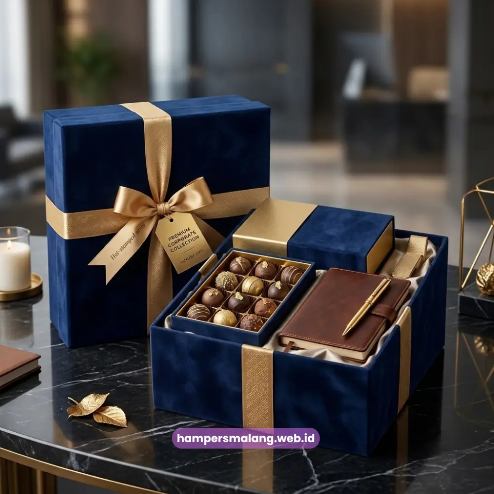

Ide hampers elegan untuk mitra bisnis di Jawa Timur mencakup kombinasi produk premium, kemasan minimalis, dan sentuhan personalisasi yang mencerminkan profesionalisme perusahaan.
Kesan elegan pada hampers penting karena secara langsung memengaruhi persepsi mitra bisnis terhadap kualitas dan keseriusan perusahaan dalam menjaga relasi.
Artikel ini membahas tujuh ide hampers yang dapat dipertimbangkan untuk mitra bisnis Anda.
- Hampers elegan menonjolkan kesan profesional melalui kemasan minimalis dan pemilihan produk premium.
- Ide hampers dapat disesuaikan dengan preferensi mitra bisnis, mulai dari makanan hingga merchandise fungsional.
- Personalisasi seperti logo dan kartu ucapan tetap penting meski tampilan hampers cenderung minimalis.
- Pemilihan ide yang tepat membantu perusahaan menonjol dibandingkan cinderamata bisnis pada umumnya.
Mengapa Kesan Elegan Penting dalam Hampers untuk Mitra Bisnis
Kesan elegan pada hampers penting karena mitra bisnis, terutama pada level manajemen atau korporat, cenderung menilai kualitas relasi dari detail-detail kecil, termasuk cara perusahaan menyampaikan apresiasi.
Hampers dengan tampilan berantakan atau isi yang terlalu ramai justru dapat menurunkan kesan profesional yang ingin dibangun perusahaan.
Sebaliknya, hampers dengan desain minimalis, warna netral, dan pemilihan produk yang terkurasi dengan baik cenderung memberikan kesan lebih premium meskipun jumlah item di dalamnya tidak terlalu banyak. Pendekatan "less is more" ini banyak digunakan dalam corporate gifting modern.
Baca Juga: Hampers Perusahaan Jawa Timur untuk Klien dan Karyawan
Apa Perbedaan Hampers Elegan dan Hampers Biasa?
Hampers elegan berbeda dari hampers biasa terutama pada aspek kurasi produk dan kesederhanaan tampilan, di mana hampers elegan cenderung membatasi jumlah item namun memastikan setiap item memiliki kualitas dan nilai estetika yang tinggi. Hampers biasa cenderung mengutamakan kuantitas isi tanpa terlalu memperhatikan keselarasan visual antar produk.
7 Ide Hampers Elegan untuk Mitra Bisnis
Berikut adalah tujuh ide hampers elegan yang dapat dipertimbangkan perusahaan Anda ketika ingin memberikan kesan profesional kepada mitra bisnis di Jawa Timur.
1. Hampers Kopi dan Teh Premium
Kombinasi kopi atau teh premium dengan cangkir minimalis bermerek perusahaan cocok untuk mitra bisnis yang menghargai momen relaksasi di sela kesibukan kerja. Kemasan kayu atau kotak berbahan natural sering dipilih untuk memperkuat kesan elegan.
2. Hampers Makanan Sehat dan Organik
Tren gaya hidup sehat membuat hampers berisi makanan organik, granola, atau camilan rendah gula semakin diminati kalangan profesional. Jenis hampers ini menunjukkan bahwa perusahaan memperhatikan kesejahteraan penerimanya.

3. Hampers Alat Tulis Premium
Alat tulis berkualitas seperti notebook kulit atau pena eksklusif tetap menjadi pilihan klasik yang relevan untuk mitra bisnis di lingkungan korporat maupun instansi.
4. Hampers Perawatan Diri Minimalis
Produk perawatan diri seperti sabun alami, lilin aromaterapi, atau minyak esensial dengan kemasan monokrom memberikan kesan elegan sekaligus personal bagi penerima.
5. Hampers Kombinasi Makanan Ringan Premium
Kombinasi camilan premium seperti kacang panggang, coklat kualitas tinggi, dan kue kering dalam kemasan seragam menciptakan tampilan yang rapi dan mewah tanpa perlu isi yang berlebihan.
6. Hampers Custom dengan Elemen Lokal Jawa Timur
Menyisipkan produk khas daerah Jawa Timur, seperti kopi lokal atau camilan tradisional yang dikemas ulang secara modern, dapat memberikan nilai tambah sekaligus mengangkat identitas kedaerahan perusahaan.
7. Hampers Modular yang Dapat Disesuaikan Anggaran
Hampers modular memungkinkan perusahaan memilih kombinasi item sesuai anggaran tanpa mengurangi kesan elegan, karena kurasi tetap difokuskan pada kualitas dibandingkan kuantitas.
Baca Juga: Hampers Lebaran Perusahaan Jawa Timur untuk Klien Setia
Bagaimana Memilih Ide Hampers yang Tepat untuk Mitra Bisnis?
Pemilihan ide hampers yang tepat sebaiknya mempertimbangkan profil mitra bisnis, tujuan pemberian, dan konsistensi dengan identitas perusahaan, sehingga hampers yang diberikan terasa relevan sekaligus mencerminkan citra profesional secara menyeluruh.
Ide hampers elegan untuk mitra bisnis di Jawa Timur sebaiknya dipilih berdasarkan kurasi produk berkualitas, tampilan minimalis, serta personalisasi yang konsisten dengan identitas perusahaan.
Ketujuh ide di atas dapat menjadi acuan awal sebelum menentukan konsep hampers yang paling sesuai dengan kebutuhan bisnis Anda.
Tanya Jawab Seputar Hampers Elegan
Kesan elegan pada hampers umumnya berasal dari kurasi produk berkualitas, kemasan minimalis, dan konsistensi warna maupun branding.
Tidak selalu, karena hampers elegan justru sering mengutamakan kualitas dan kurasi produk dibandingkan jumlah item yang banyak.
Ya, hampers elegan dapat disusun secara modular sehingga tetap terlihat premium meski disesuaikan dengan anggaran yang tersedia.

Butuh Hampers Perusahaan?
Solusi Hampers & Corporate Gift Kreatif di Jawa Timur.
Ditulis oleh Tim Maroon Souvenir
Sahabat mahasiswa dan pelaku bisnis di Malang Raya. Berpengalaman menangani merchandise event kampus, instansi pemerintahan, dan hotel berbintang di Batu.